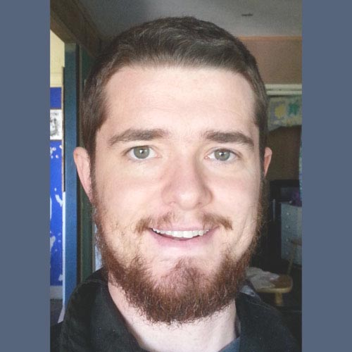
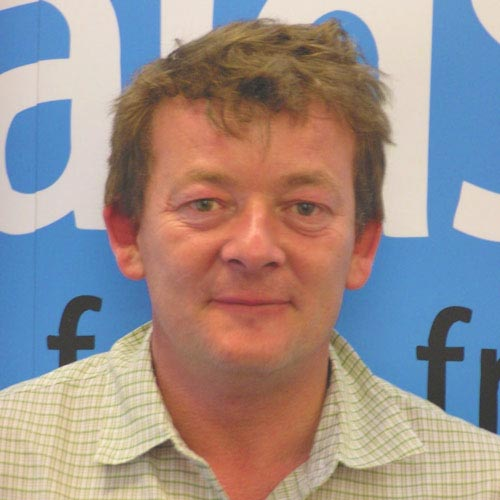
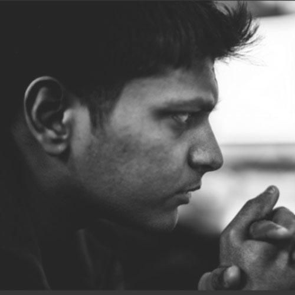
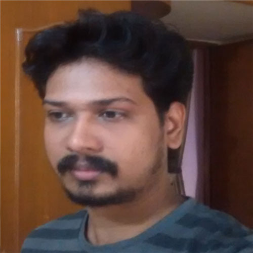
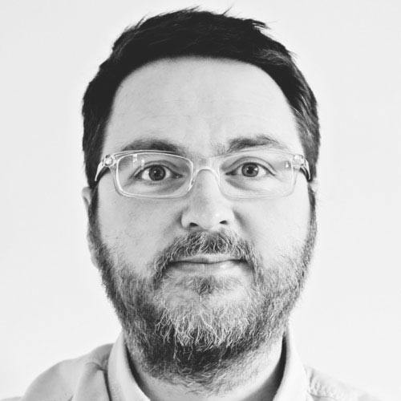
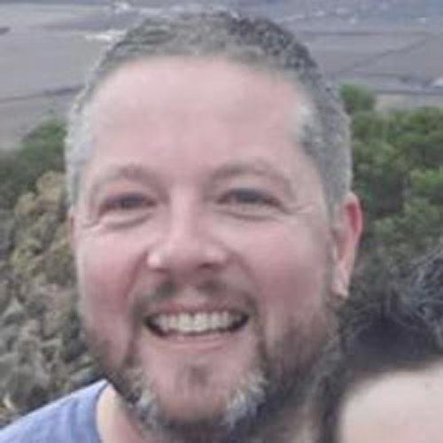
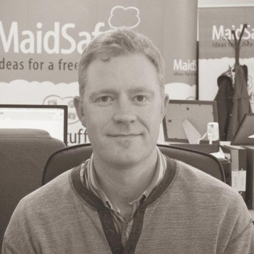
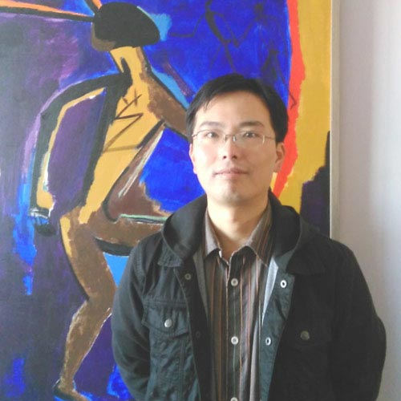

Started in 2006 by Scottish engineer David Irvine, MaidSafe is a small team, comprised of: thinkers, inventors, tinkerers, PHDs, engineers and designers. Although based in Troon, Scotland, we have drawn talents from many different cultures and countries, reflecting the users that we serve. Despite this variety, we all share a mission, a desire to provide security and privacy for everyone. This is a simple focus, but we would argue that simplicity is good, it helps us see the woods for the trees, delivering products centred around users with a definitive purpose.
MaidSafe's aim is to provide privacy, security and freedom to everyone on the planet. This has been our unwavering ambition since we started on this journey in 2006 and it remains our driving force today.
Online data has become so insecure and data thefts so common place that our trust in companies securing our data is almost entirely eroded. As estimated 1.1 billion personal and sensitive records were stolen during 2014 with 8 incidents reporting every single day. A new way of managing data is required and MaidSafe combine several features that we believe provide security not possible usinf existing methods.
Data security not only allows us to keep our credit card details safe, or our medical records secure, only with security do we achieve privacy. Privacy is mis understood by many. They believe that demanding privacy is identical to protecting secrets, or hiding something that we shouldn’t be doing. That is some way, by not wanting to share everything with the world, that you are doing something you shouldn’t. To us, this is not what privacy is about. Privacy affords us the ability to think, explore, act and speak without others judging us, or our actions. It is in the environment in which creativity, new ideas and forms of expression flourish, unhampered by the oversight of society.
To us, this is what privacy, security and freedom are all about.We are an eclectic and multicultural group of passionate, focussed and genuine individuals determined to release great software while making a hugely positive impact on the world. If you would like to help, please send your CV along with a covering letter detailing why you are a great fit for the position to: careers@maidsafe.net and we will get back to you as soon as we can.